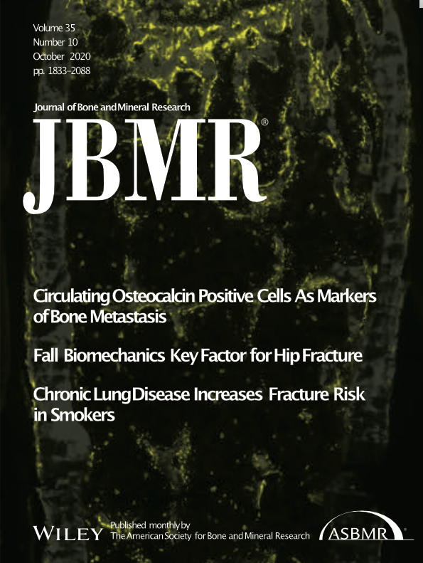
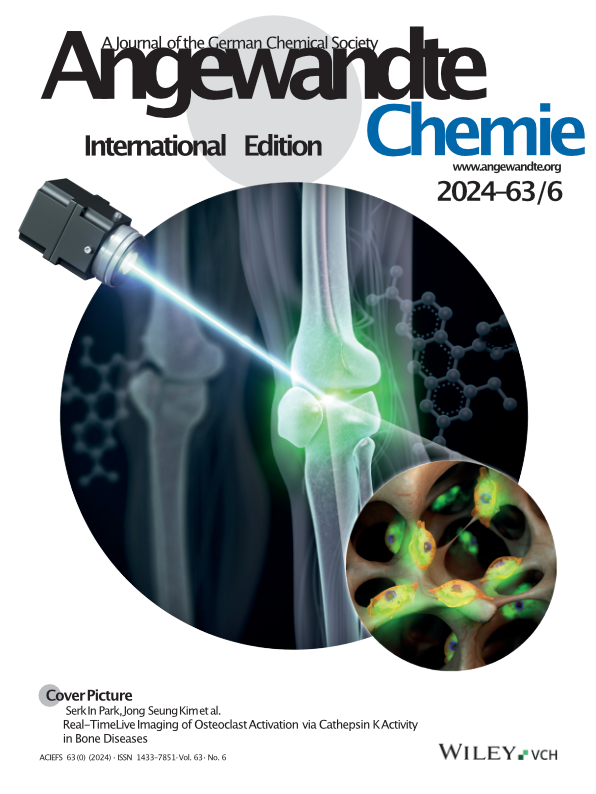

The Bone Lab at Korea University works at the intersection of cancer biology, bone biology, and immunology. Based in one of the leading medical centers in Seoul, we aim to cure bone metastasis, a devastating sequela of breast, prostate, lung, and other advanced cancers that dramatically affects patient survival and quality of life.
Our mission is to develop advanced early diagnostics and novel therapeutics for bone metastasis. We bridge fundamental discovery with clinical translation, employing cutting-edge technologies to analyze human patient blood samples, surgical bone biopsy samples, and mouse tumor models. Our technical arsenal includes multicolor flow cytometry, state-of-the-art mass cytometry (CyTOF), molecular biology, histology, RNAscope in situ hybridization, spatial transcriptomics, and advanced intravital two-photon microscopy, all available in-house. We maintain unique bone metastasis mouse models, including xenograft, syngeneic, and transgenic systems, that faithfully recapitulate human disease progression.
Our research focuses on how cellular and molecular interactions within the tumor microenvironment drive bone metastasis, encompassing the complex interplay among bone cells, metastatic cancer cells, and bone marrow immunology. We focus particularly on immature myeloid cells and their roles in creating the metastatic niche and influencing treatment responses. We also aim to identify master regulators that orchestrate the metastatic bone microenvironment. This multidisciplinary approach provides an exceptional training environment for next-generation investigators, both domestic and international, pursuing translational cancer immunology and bone biology.
*Header image: Longitudinal section of the proximal tibia from a Col1-Cre::mTmG mouse. Representative data from the Bone Lab
Research
Since its establishment in 2012 at Vanderbilt University School of Medicine in Nashville, TN, USA, our laboratory has maintained continuous support from competitive funding agencies, including the National Research Foundation of Korea, the National Cancer Center of Korea, and the U.S. Department of Defense.
Our current research focuses on the following areas:
- The brain-bone axis regulating bone marrow immunity.
- Non-canonical roles of B7-H3, an immune checkpoint molecule, in myeloid lineage cells within the tumor microenvironment.
- Roles of osteoblasts and osteocytes in orchestrating the metastatic bone microenvironment.
- Metabolic reprogramming of osteoblasts in osteoblastic and osteolytic bone lesions.
- Targeting CXCL16 in the metastatic bone microenvironment.
- Development of multi-omics approaches to visualize the immune landscape of the bone marrow in cancer patients and mouse models.
Publications
- Lee KH, Lee KJ, Kim TY, Hutomo F, Sun HJ, Cheon GJ, Park SI*, Cho SW*, Im SA. Circulating osteocalcin-positive cells as a novel diagnostic biomarker for bone metastasis in breast cancer patients. J Bone Miner Res. 2020; 35(10):1838-1849. (*=Co-Correspondence)
- Featured on the front cover and commented in ‘Johnson RW. The search for a bone metastasis biomarker may have a new find: Circulating osteocalcin-positive cells. J Bone Miner Res. 2020; 35(10):1836-1837.’
- Lee EJ, Lee KJ, Jung S, Park KH, Park SI. Mobilization of Monocytic Myeloid-Derived Suppressor Cells is Regulated by PTH1R Activation in Bone Marrow Stromal Cells. Bone Res. 2023; 11:22
- Koo S, Lee EJ, Xiong H, Yun DH, McDonald MM, Park SI*, Kim JS*. Real-time live imaging of osteoclasts activation via cathepsin K activity in bone diseases. Angew Chem Int Ed Engl. 2024 Feb 5; 63(6):e202318459. (*=Co-Correspondence)
- Yun DH, Kim JH, Lee SH, Lee EJ, Park SI*, Song YS*. Human adipose stem cells engineered to express carboxylesterase confer anti-tumoral efficacy of irinotecan in castration-resistant prostate cancer bone metastasis growth and osteolysis. World J Mens Health. 2025 Jun 11. (*=Co-Correspondence)


Our Team
Bench-to-Bedside Translation
Where clinical immunology meets artificial intelligence.
As Co-Founder and Chief Science Officer, I lead the scientific vision of AImmuneLink, Inc., a biotech startup pioneering the convergence of clinical immunology, oncology, and advanced laboratory diagnostics. Our mission centers on breakthrough bench-to-bedside translation: transforming cutting-edge immune profiling technology into actionable clinical solutions for patients.
We integrate deep domain expertise in biomedical science with artificial intelligence to analyze patient blood samples using the CyTOF XT Pro, the most advanced mass cytometry platform currently available exclusively in the Asia-Pacific region through our facility. In partnership with AI engineers from the Korea University Human-Inspired AI Institute, we are developing AI algorithms that can analyze and visualize the immune landscape. This innovation enables ultra-high-dimensional, single-cell level immune profiling, transforming complex immunological data into actionable clinical insights and redefining precision immunology for real-world patient care.